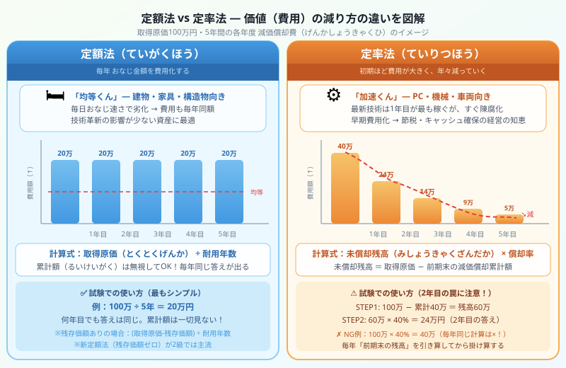

著者・大谷からひとこと
こんにちは、大谷です！実は僕、大学の講義で減価償却を習ったとき、「毎年同じ定額法だけでいいじゃん！なんでわざわざ計算がめんどくさい定率法なんて作ったんだよ、意味不明……なんじゃこりゃ！」と激しくイライラしました（笑）。
でも、その【存在理由】が分かった瞬間、簿記のパズルが10倍面白くなったんです！今回はその秘密を優しくナビゲートします。
モチベ維持のために、末尾のほうにある【いいねボタン】もポチッと押してもらえると、めちゃくちゃ嬉しいです！

図：取得原価100万円・5年間の減価償却費の比較（定額法：毎年20万円均等／定率法40%：40万→24万→14万→9万→5万と加速減少）
簿記2級を学び始めると「定額法」と「定率法」という2つの減価償却方法が出てきます。「どっちかひとつでよくない？」と思うのは当然です。でも、この2つが存在する理由にはちゃんとした経営の知恵と現実の問題が隠れています。
RPGの世界で考えると、一気に腑に落ちます。
RPGの宿屋にあるベッドを想像してください。1年目も3年目も5年目も、同じペースで少しずつ傷んでいきます。特別な技術革新が起きるわけでもなく、毎日コツコツと劣化していく。
これが「建物」「構造物」「工具・器具・備品の一部」のイメージです。10年後に突然「新型の宿屋ベッド」が出て今のベッドの価値がゼロになる……なんてことは起きません。だから毎年おなじ金額を費用として認識する「定額法」が自然に合っているんです。
この式の最大の特徴は「累計額（るいけいがく）を一切見ない」こと。何年目であろうと、答えは常に同じ金額です。
こんどはRPGの最新魔導アーマーを想像してください。装備した1年目は性能MAXで、敵に圧勝。お城を守りまくってガンガン稼いでくれます。でも、翌年には新型が発売されて今のモデルの価値はガクンと落ちる……。
これが「パソコン」「機械装置」「車両」のイメージです。技術革新が早い資産は、1〜2年目が最も稼働率・価値ともに高く、年を追うごとに陳腐化してしまう。
ここで経営の知恵が登場します。「価値が早く落ちるなら、費用も早いうちに大きく引いてしまえ！」——稼げているうちに費用を先取りすることで、税金の支払いを早期に抑えてキャッシュを手元に残せます。これが定率法が存在する本当の理由です。
ポイントは「未償却残高が毎年変わる」こと。前の年に引いた分だけ、次の年の計算のベースが小さくなっていきます。だから費用も年々減っていくのです。
| 種類 | イメージ | 向いている資産 | 費用の特徴 |
|---|---|---|---|
| 定額法 | 宿屋のベッド型 | 建物・構造物・工具器具備品 | 毎年同額・シンプル |
| 定率法 | 魔導アーマー型 | 機械装置・パソコン・車両 | 初期ほど大きく、年々減少 |
ここからが試験攻略の本番です。「知っている」と「解ける」は別物です。どちらの方法でも、電卓を叩く前に手書きの下書きをすることが最大のミス防止策になります。
定額法は最もシンプルです。累計額は完全に無視して、ただ割り算するだけ。
| 借方 | 金額 | 貸方 | 金額 |
|---|---|---|---|
| 減価償却費 | 120,000 | 減価償却累計額 | 120,000 |
定率法は「まず引き算、次に掛け算」の2ステップが絶対に必要です。電卓を持つ前に紙に書くことを習慣にしてください。
| 借方 | 金額 | 貸方 | 金額 |
|---|---|---|---|
| 減価償却費 | 240,000 | 減価償却累計額 | 240,000 |
| 年度 | 取得原価 | 前期末累計額 | 未償却残高 | × 40% | 減価償却費 |
|---|---|---|---|---|---|
| 1年目 | 1,000,000 | 0 | 1,000,000 | × 0.4 | 400,000 |
| 2年目 | 1,000,000 | 400,000 | 600,000 | × 0.4 | 240,000 |
| 3年目 | 1,000,000 | 640,000 | 360,000 | × 0.4 | 144,000 |
| 4年目 | 1,000,000 | 784,000 | 216,000 | × 0.4 | 86,400 |
| 5年目 | 1,000,000 | 870,400 | 129,600 | × 0.4 | 51,840 |
※実際の定率法には「償却保証額」「改定償却率」も存在しますが、簿記2級の試験では問題文に従えばOKです。
仕訳の練習は本編記事で！
定額法・定率法の「なぜ」が分かったら、次は実際の仕訳を本編記事で反復演習しましょう。除却・売却・期中売却・買換えまで、試験の頻出パターンが全部入っています。
固定資産の仕訳・本編記事へ →この記事、お役に立てましたか？
この記事が少しでも参考になったら、僕の執筆のモチベーション維持のために、この下にある【いいねボタン】をポチッと押してもらえると、めちゃくちゃ嬉しいです！ 皆さんの一押しが、次の記事を書く力になります。